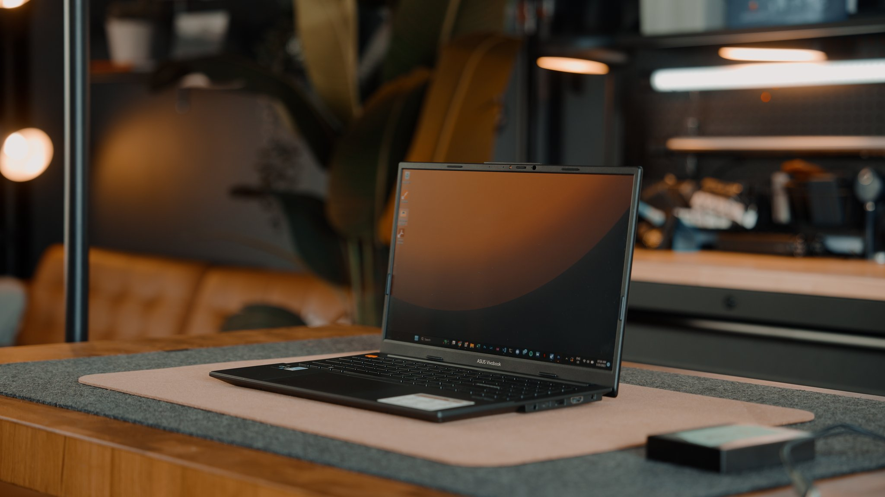

Websites &
digital experiences
Professional, mobile-friendly websites that explain what you do, build confidence and guide visitors towards action.
Discuss a websiteWe design and build professional websites and practical digital systems that help people discover your business, understand what you offer and take the next step.

STRATEGY · DESIGN · DEVELOPMENTWHAT WE BELIEVE
Digital should do more than look good. It should make the next step clearer for your customers.
01 / WHAT WE DO
From a first website to a connected customer journey, we bring design and technology together around what your business needs.
Professional, mobile-friendly websites that explain what you do, build confidence and guide visitors towards action.
Discuss a websiteClearer ways for potential customers to ask questions, request information and reach the right person.
Improve your enquiriesUseful customer journeys that connect your services, products or listings to the tools you already use.
Explore an integrationPractical content and digital improvements that help your business communicate consistently online.
Talk about growth02 / SELECTED WORK
A selection of website concepts and digital builds across different business types. Explore the work and the experiences we've been developing.
03 / HOW WE WORK
We start by understanding the business, then shape a solution around the people who will use it.
We learn about your business, your customers and what you need the digital experience to achieve.
We agree the scope, structure and visual direction before moving into development.
We develop the agreed solution, share progress and test the important customer journeys.
We prepare the site for launch, hand it over clearly and provide the support agreed in your proposal.
04 / THE STUDIO
TWS Digital is a Botswana-based digital solutions studio bringing together design, development and business-focused thinking. We work with businesses to make their online presence clearer, more useful and better connected to the way they serve customers.
We believe in practical solutions, honest commitments and work that earns its place.
Get to know us through a projectANSWERS TO COMMON QUESTIONS
A little more about what TWS Digital builds and how we work with businesses in Botswana.
TWS Digital designs and builds websites and practical digital systems for businesses. Services include digital experiences, enquiry and lead systems, booking and ordering journeys, online catalogues, and digital content support.
TWS Digital is an independent digital studio based in Gaborone, Botswana, and works with businesses nationwide.
Yes. TWS Digital builds mobile-friendly websites designed to explain what a business offers, build customer confidence and make the next step clear.
Share a little about your business and what you want to build using the contact link. You can start a conversation on WhatsApp or email hello@twsdigital.co.bw.
Yes. TWS Digital can create booking, ordering and online catalogue experiences that connect a business’s services or products to the tools it already uses.
06 / START A CONVERSATION
Tell us a little about your business and what you're looking to build. We'll take it from there.
Gaborone, Botswana · Working with businesses nationwide